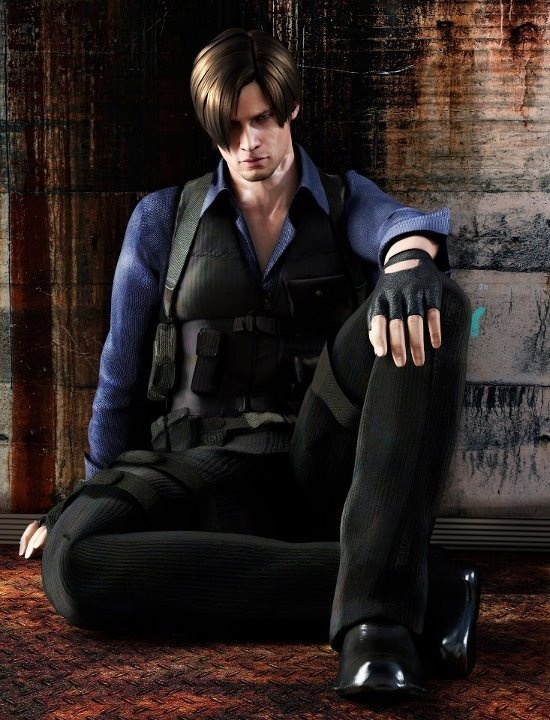

Leon S. Kennedy
Leon Scott Kennedy es uno de los personajes principales de la saga de Resident Evil (RE).
Es un agente del gobierno de los EEUU., de la organización especial D.S.O. (División de Operaciones de Seguridad).
Algunos de sus compañeros son Chris Redfield y Ada Wong
Resident Evil 2
Al llegar por a Racoon City como policía novato, se encuentra con todos sus compañeros muertos o convertidos en zombies debido a un agente patógeno llamado Virus-T. Allí se encuentra con Claire Redfield, una estudiante universitaria que está buscando a su hermano, Chris Redfield.
Durante su recorrido por la comisaría, encuentran pistas sobre el paradero de Chris y sobre el incidente con el virus. Leon se encuentra con una misteriosa mujer superviviente de la epidemia, Ada Wong. Juntos descubren la relación entre el jefe de la policía con la organización culpable de la enfermedad, Corporación Umbrella.
Escenario canónico
Uno de los virólogos de Umbrella le entrega a Leon unos documentos antes de fallecer. Escapando de la ciudad, se encuentran con una entrada secreta en las cloacas que conduce a un laboratorio subterráneo de Umbrella. Después de una serie de peleas con criaturas mutantes, ambos consiguen escapar y destruir el laboratorio.
Otros personajes de RE
Información de Leon
| Edad | Trabajos | Apariciones | Citas |
|---|---|---|---|
| 21 (RE 2) | Oficial de policía del R.P.D. | Resident Evil 2 | ¿«A dónde van todos? ¿Al Bingo»? |
| 27 (RE 4) | Agente del Gobierno de EE.UU. | Resident Evil 4 | «La historia de mi vida...» |
| 49 (RE 9) | Agente de la D.S.O. | Resident Evil: Requiem | «¿Quieres jugar duro? vale...» |
Galería de imágenes
Fanarts